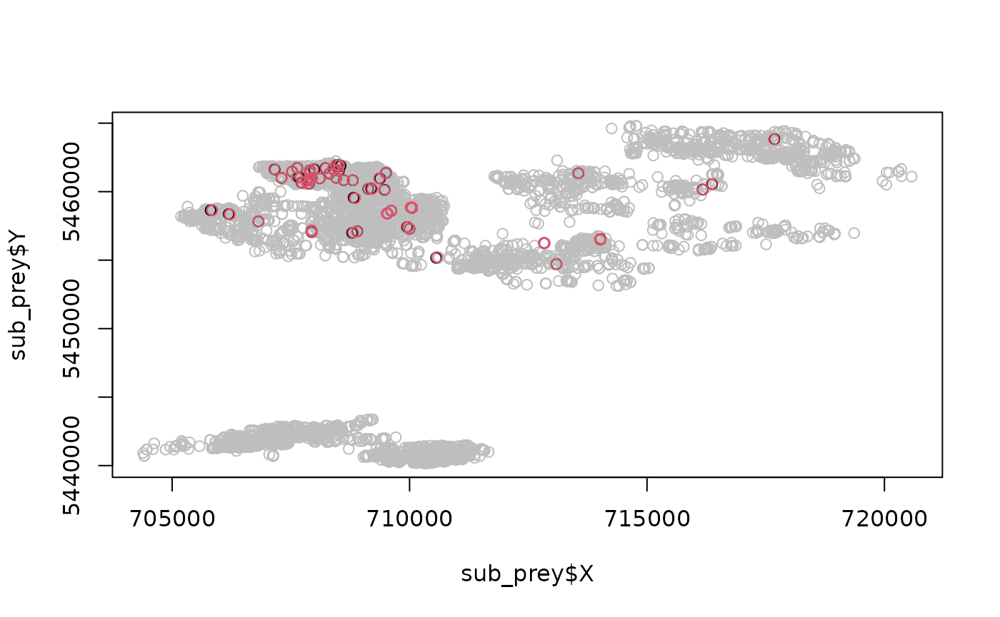

library(spatsoc)
#> Note: spatsoc has been updated to follow the R-spatial evolution.
#> Package dependencies and some functions have been modified.
#> Please see the NEWS for details:
#> https://docs.ropensci.org/spatsoc/index.html#news
library(data.table)Multispecies interactions
Multispecies data can be used with spatsoc to estimate interspecific interactions, eg. predator-prey dyanmics.
Given two datasets of movement data, simply bind them together and use the group_* functions as usual.
predator <- fread(system.file("extdata", "DT_predator.csv", package = "spatsoc"))
prey <- fread(system.file("extdata", "DT_prey.csv", package = "spatsoc"))
DT <- rbindlist(list(predator, prey))
# Set the datetime as a POSIxct
DT[, datetime := as.POSIXct(datetime)]
# Temporal grouping
group_times(DT, datetime = 'datetime', threshold = '10 minutes')
#> ID X Y datetime population type minutes
#> <char> <num> <num> <POSc> <int> <char> <int>
#> 1: B 708315.6 5460839 2016-11-30 14:00:45 1 predator 0
#> 2: A 709764.2 5458231 2017-01-05 10:00:54 1 predator 0
#> 3: B 709472.3 5460132 2016-12-03 08:00:42 1 predator 0
#> 4: A 713630.5 5456393 2017-01-27 02:01:16 1 predator 0
#> 5: B 707303.2 5461003 2016-12-17 18:00:54 1 predator 0
#> ---
#> 5824: G 708660.2 5459275 2017-02-28 14:00:44 1 prey 0
#> 5825: G 708669.4 5459276 2017-02-28 16:00:42 1 prey 0
#> 5826: G 708212.0 5458998 2017-02-28 18:00:53 1 prey 0
#> 5827: G 708153.2 5458953 2017-02-28 20:00:12 1 prey 0
#> 5828: G 708307.6 5459182 2017-02-28 22:00:46 1 prey 0
#> timegroup
#> <int>
#> 1: 1
#> 2: 2
#> 3: 3
#> 4: 4
#> 5: 5
#> ---
#> 5824: 1422
#> 5825: 1423
#> 5826: 1424
#> 5827: 1425
#> 5828: 1440
# Spatial grouping
group_pts(DT, threshold = 50, id = 'ID', coords = c('X', 'Y'), timegroup = 'timegroup')
#> ID X Y datetime population type minutes
#> <char> <num> <num> <POSc> <int> <char> <int>
#> 1: B 708315.6 5460839 2016-11-30 14:00:45 1 predator 0
#> 2: A 709764.2 5458231 2017-01-05 10:00:54 1 predator 0
#> 3: B 709472.3 5460132 2016-12-03 08:00:42 1 predator 0
#> 4: A 713630.5 5456393 2017-01-27 02:01:16 1 predator 0
#> 5: B 707303.2 5461003 2016-12-17 18:00:54 1 predator 0
#> ---
#> 5824: G 708660.2 5459275 2017-02-28 14:00:44 1 prey 0
#> 5825: G 708669.4 5459276 2017-02-28 16:00:42 1 prey 0
#> 5826: G 708212.0 5458998 2017-02-28 18:00:53 1 prey 0
#> 5827: G 708153.2 5458953 2017-02-28 20:00:12 1 prey 0
#> 5828: G 708307.6 5459182 2017-02-28 22:00:46 1 prey 0
#> timegroup group
#> <int> <int>
#> 1: 1 1
#> 2: 2 2
#> 3: 3 3
#> 4: 4 4
#> 5: 5 5
#> ---
#> 5824: 1422 5467
#> 5825: 1423 5468
#> 5826: 1424 5469
#> 5827: 1425 5470
#> 5828: 1440 5471
# Calculate the number of types within each group
DT[, n_type := uniqueN(type), by = group]
DT[, interact := n_type > 1]
# Prey's perspective
sub_prey <- DT[type == 'prey']
sub_prey[, mean(interact)]
#> [1] 0.01169693
# Plot --------------------------------------------------------------------
# If we subset only where there are interactions
sub_interact <- DT[(interact)]
# Base R plot
plot(sub_prey$X, sub_prey$Y, col = 'grey', pch = 21)
points(sub_interact$X, sub_interact$Y, col = factor(sub_interact$type))